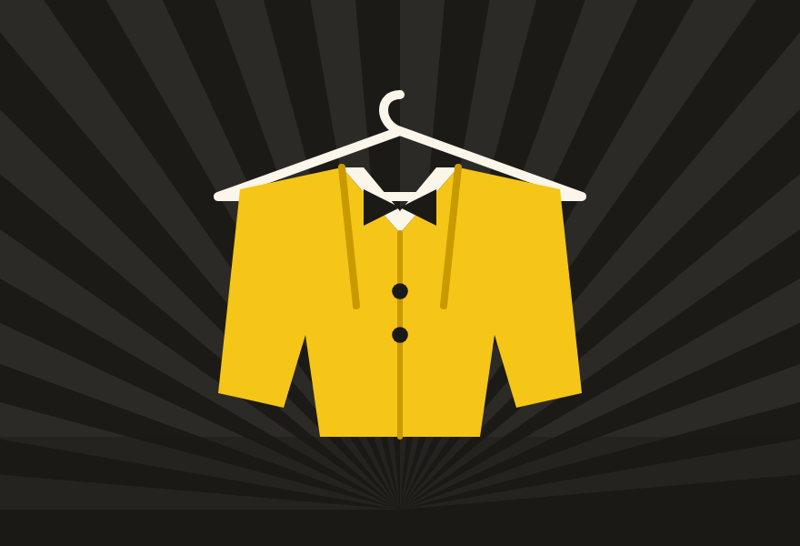

A product thought experiment
Banana Cards
Trading cards the Banana Ball way: value from being there, not from scarcity.
Concept to working demo · Not affiliated with the Savannah Bananas, Fans First Entertainment or the Banana Ball Championship League